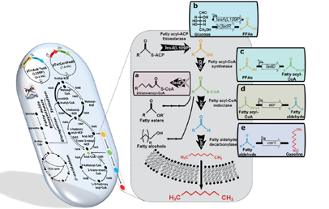
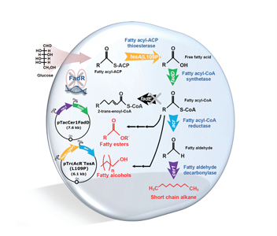

연구성과 10선
연구성과 10선
KAIST RESEARCH ACHIEVEMENTS
나무 찌꺼기 및 잡초 등으로
가솔린, 디젤을 만든다!
생명화학공학과 이상엽
요약
2037년 인류는 무분별한 화석 원료의 사용으로 인해 매장되어있는 화석 원료가 모두 고갈되어 대체 에너지 수급이 간절해진다. 기존 천연자원의 빈국이었던 우리나라는 지속 가능한 바이오 연료 생산의 원천 기술을 확보함으로써, 글로벌 에너지 시장의 강자로 떠오르게 된다. 또한, 이에 따른 다른 바이오 기반 원천 기술 개발 및 원천 특허 확보를 통해 기술적, 경제적 가치를 창출하게 될 뿐만 아니라, 친환경 바이오 에너지 분야를 선도하는 허브로써, 세계 경제를 이끌어 가게 된다.
연구내용

바이오연료는 지속적인 성장 잠재력을 보유한 산업으로서 천연자원 빈국인 우리나라는 그동안 글로벌 에너지 시장의 약자였으나, 본 기술이 앞으로 발전하여 실용화 및 상용화 수준에 이르게 된다면 한국 기업들이 에너지 산업에 진출하고 수/출입 판도를 재편할 수 있는 기회를 얻을 것으로 예상된다. 본 연구를 통하여 확보할 균주 디자인 시스템대사공학과 발효 분리 공정 원천 기술들은 바이오 연료뿐만이 아닌 다양한 차세대 바이오매스 기반 바이오 기반 제품 생산 능력을 더욱 진보시킬 것이다.

탄화수소 화합물인 bio-alkane은 상대적으로 긴 사슬을 갖는 지방산의 탈 카르보닐 반응을 거쳐 만들어진다. 이렇게 생산된 기존의 bio-alkane은 사슬 길이가 길어 바이오 디젤로 사용은 가능하나 가솔린으로는 사용할 수가 없다는 단점이 있다. 이러한 단점을 보완하고, 미생물로부터 직접 가솔린으로 사용가능한 bio-alkane을 생산하기 위하여, 본 연구에서는 대사 공학기술을 미생물에 적용하여 지방산 합성을 저해하는 요소를 제거하고, 지방산의 길이를 원하는 목적에 맞게 조절할 수 있는 효소를 새롭게 발견하였으며, 개량된 효소를 도입하여 미생물에서 생산하기 어려운 짧은길이의 지방산 생산에 성공하였다. 또한, 짧은 길이의 지방산에 생물체내에 존재하지 않는 식물 유래의 신규 효소를 포함하는 합성대사경로를 도입하여 최종 대사공학적으로 개발된 대장균을 배양하여 배양액 1리터당 약 580mg의 가솔린을 생산하는데 성공했다.
기대효과
개발된 기술은 바이오 연료, 생분해성 플라스틱 등과 같은 다양한 바이오 화합물을 생산할 수 있는 플랫폼 기술이 될 수 있을 것으로 전망되며, 이 기술을 활용하면 재생 가능한 바이오매스를 전환하여 바이오 연료, 계면 활성제, 윤활유 등으로 이용할 수 있는 알코올(Fattyalcohol) 및 바이오 디젤(Fatty ester)도 생산이 가능하다는 점에서 기존의 석유기반 화학산업을 바이오 기반 화학산업으로 대체하는 기반이 될 수 있을 것으로 기대된다.
연구지원
ㆍ미래창조과학부 글로벌프론티어 사업 차세대 바이오매스 연구단
ㆍ기후변화대응 기술개발사업
연구실적
ㆍ2013년 사회 경제적으로 파급력이 큰 국내 바이오 연구성과 Top5 선정
ㆍChoi, Y.J., Lee, S.Y., "Microbial production of shortchain alkanes", Nature, 502(7472): 571-574(2013.10)
ㆍNature Journal Cover paper 선정(2013.10)
ㆍFaculty of 1000 Prime(F1000Prime) 선정
ㆍ국내 특허 등록, 국외 6개 국가 특허 출원 중
ㆍThe Wall Street Journal, aljazeera 등 국내 및 해외언론 보도
ㆍ대덕연구개발특구 40주년 기념 KAIST 대표 연구성과 선정 및 소개